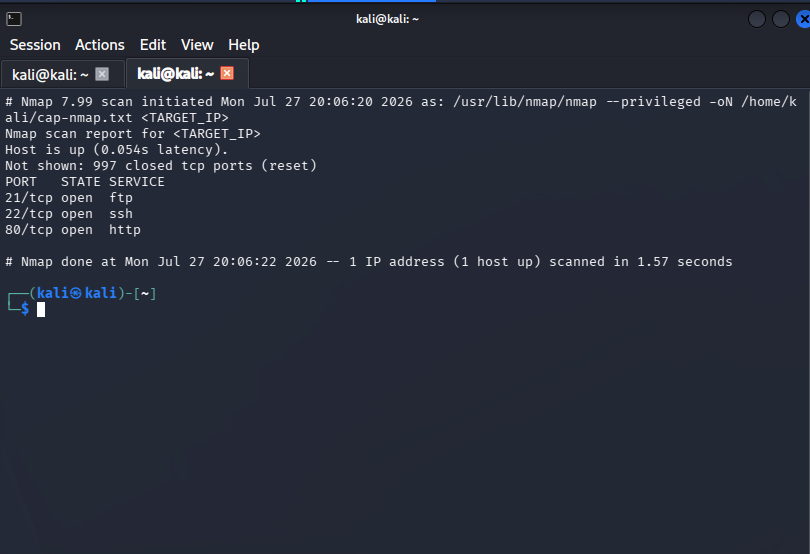

Project Overview
Completed an authorized security assessment of the retired Hack The Box Cap machine. The assessment included service enumeration, web application testing, PCAP analysis, credential exposure validation, remote access, and Linux privilege-escalation analysis.
Flags, passwords, target addresses, and other sensitive lab values have been intentionally omitted.
Environment and Tools
- Hack The Box retired Cap machine
- Kali Linux running in Oracle VirtualBox
- HTB OpenVPN lab connection
- Nmap for network enumeration
- Firefox for web application testing
- Wireshark for packet-capture analysis
- SSH for authenticated remote access
- Linux capability enumeration with
getcap - Python 3.8 for privilege-escalation validation
Assessment Methodology
1. Network Enumeration
Performed an initial TCP scan to identify the target's externally accessible services.
nmap <TARGET_IP>The scan identified three exposed services:
- FTP on TCP port 21
- SSH on TCP port 22
- HTTP on TCP port 80

2. Web Application Testing
Reviewed the web-based security dashboard and observed that generated packet captures were accessed through a predictable URL containing a numeric object identifier.
Changing the identifier allowed access to a packet capture associated with another user. This demonstrated an insecure direct object reference and missing server-side authorization validation.
3. Packet-Capture Analysis
Downloaded the exposed PCAP from the authorized lab and examined it in Wireshark. Applying the following display filter isolated FTP traffic:
ftpThe capture contained FTP authentication commands transmitted in plaintext. The exact credentials are not included in this portfolio.
4. Credential-Reuse Validation
The exposed FTP credentials were tested against the target's SSH service. The same credentials were accepted, demonstrating password reuse across multiple network services.
Successful SSH authentication provided access to a standard Linux user account.
5. Linux Privilege-Escalation Analysis
Enumerated Linux file capabilities to identify binaries with elevated privileges:
getcap -r / 2>/dev/null
The Python 3.8 interpreter had the
cap_setuid capability assigned. This capability allowed the
Python process to change its user ID to root and launch a privileged
shell.
Root access was successfully validated within the authorized HTB lab.
Security Findings
Finding 1: Broken Object-Level Authorization
Severity: High
Predictable packet-capture identifiers could be modified to access another user's scan. The application did not verify that the requesting user was authorized to access the selected object.
Finding 2: Plaintext FTP Credentials
Severity: High
FTP transmitted authentication credentials without encryption. Anyone capable of capturing the traffic could recover the username and password.
Finding 3: Password Reuse Across Services
Severity: High
The same password was valid for both FTP and SSH. Compromise of one service therefore resulted in access to another service.
Finding 4: Excessive Linux File Capability
Severity: Critical
The Python interpreter possessed the cap_setuid capability.
Assigning this capability to a general-purpose interpreter allowed an
authenticated user to obtain root privileges.
Remediation Recommendations
- Enforce server-side authorization checks before returning packet captures or other user-owned resources.
- Replace FTP with an encrypted protocol such as SFTP and disable plaintext authentication.
- Rotate all credentials exposed through unencrypted network traffic.
- Require unique passwords across services and consider multifactor authentication for remote administrative access.
- Remove unnecessary Linux capabilities from general-purpose interpreters.
-
Regularly audit file capabilities using
getcap -r / 2>/dev/null. - Apply least privilege to binaries, services, and user accounts.
Skills Demonstrated
- TCP service enumeration and attack-surface analysis
- Web application access-control testing
- IDOR and broken authorization identification
- Wireshark filtering and PCAP analysis
- Plaintext credential exposure analysis
- Credential-reuse validation
- Linux command-line navigation
- Linux file-capability enumeration
- Privilege-escalation analysis
- Risk assessment and remediation documentation
Key Takeaways
- Predictable object identifiers must still be protected by authorization controls.
- Plaintext protocols can expose credentials and create compromise paths into other services.
- Password reuse significantly increases the impact of one exposed credential.
- Linux capabilities can create privilege-escalation paths similar to improperly configured SUID binaries.
- Findings should be documented with both technical impact and practical remediation.